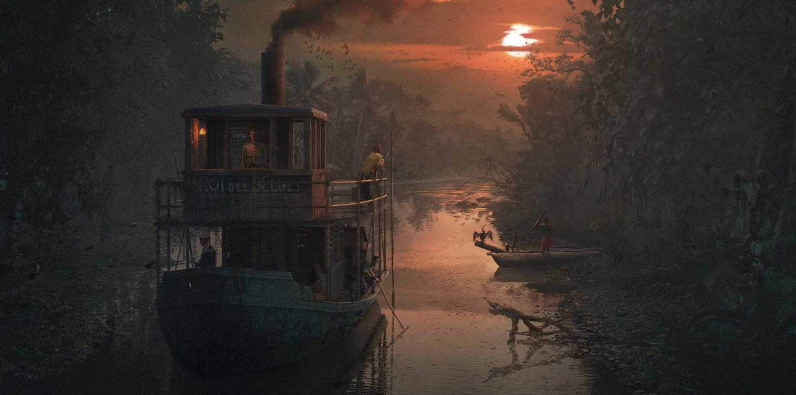

Место действия

Основные события произведения происходят в Центральной Африке, на реке Конго. Главный герой Марлоу отправляется вверх по реке на пароходе, чтобы найти Курца.
Путь проходит через густые тропические леса, отдалённые поселения и торговые станции. Постепенно путешествие превращается в исследование человеческой природы.
Река становится символом движения в неизвестность и постепенного погружения в мир жестокости и безумия.
Главные персонажи
| Персонаж | Описание |
|---|---|
| Марлоу | Моряк, главный рассказчик истории. |
| Курц | Торговый агент, которого отправились искать. |
| Директор | Руководитель центральной станции компании. |
| Русский путешественник | Последователь и почитатель Курца. |
Основные темы произведения
Колониализм
Автор показывает жестокость колониальной системы и эксплуатацию местного населения.
Человеческая природа
Путешествие раскрывает скрытые стороны человеческой личности и влияние власти.
Противостояние цивилизации и дикости
Произведение заставляет задуматься о границах между цивилизованностью и жестокостью.
Путь Марлоу
- Прибытие в Брюссель.
- Путешествие к внешней станции.
- Прибытие на центральную станцию.
- Путешествие вверх по реке Конго.
- Встреча с Курцем.
- Возвращение в Европу.